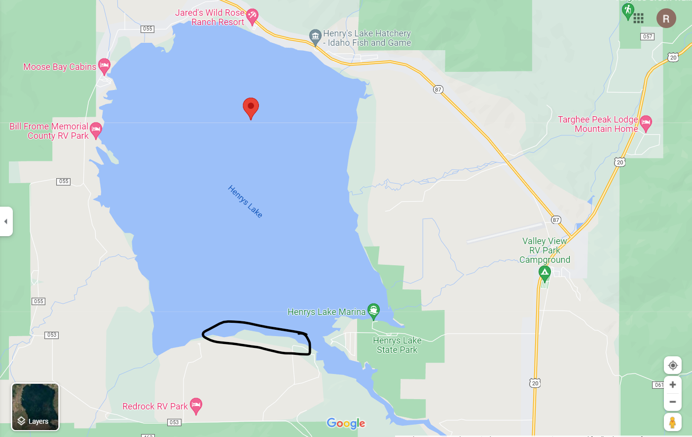
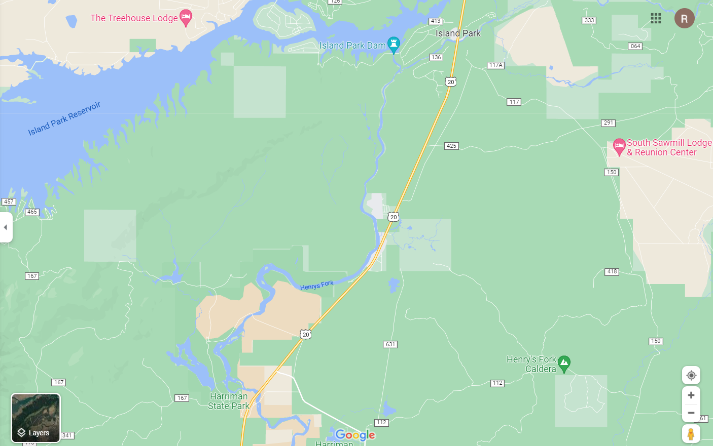

Fly Fishermen


The fly fishing here is the best in the states. With so much fish per a mile, the fishing here is the dream.
Starting off at the renowned Henry's lake, you can find Yellowstone cutthroats, rainbow cutthroat hybrids, brook trouts, and if your lucky tiger trouts.
Best type of flies and colors are the typical flies that can be found in mountain lakes and streams. Both dry flies and nymphs are effective here. With Henry's lake also having leeches that the trout feed on year round, it is also advisable to have a leech pattern color tied on with an indicator for some under the surface bites.
Popular areas to fish at Henry's lake are the indicated area on the map and Henry's Lake Marina.
Henry's lake:
Other Great Areas:
From Island park to Harriman State park is another great stretch of the Henry's fork river. There is open area for some great fly fishing and lots of fishing lodges with guides that you can hire to show you some great fishing spots.
This stretch of the river is a fly fishing only area so expect some great fishing!